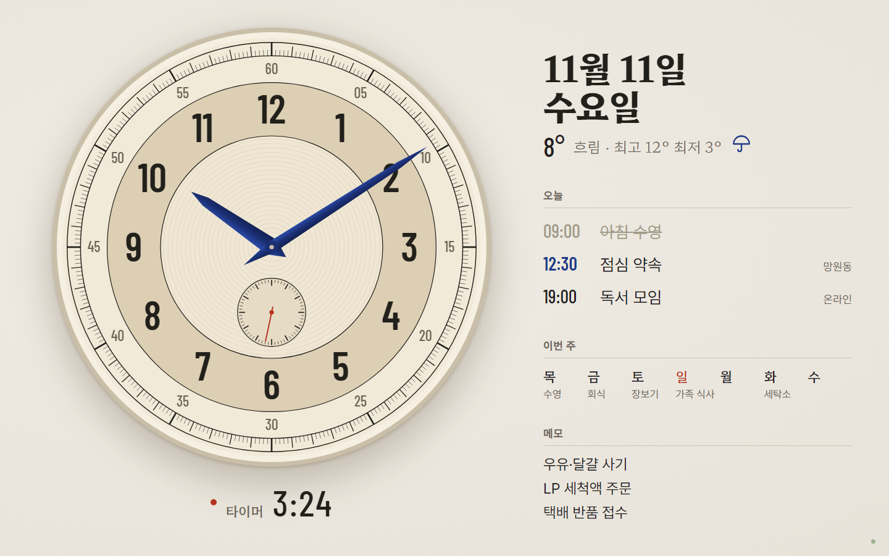
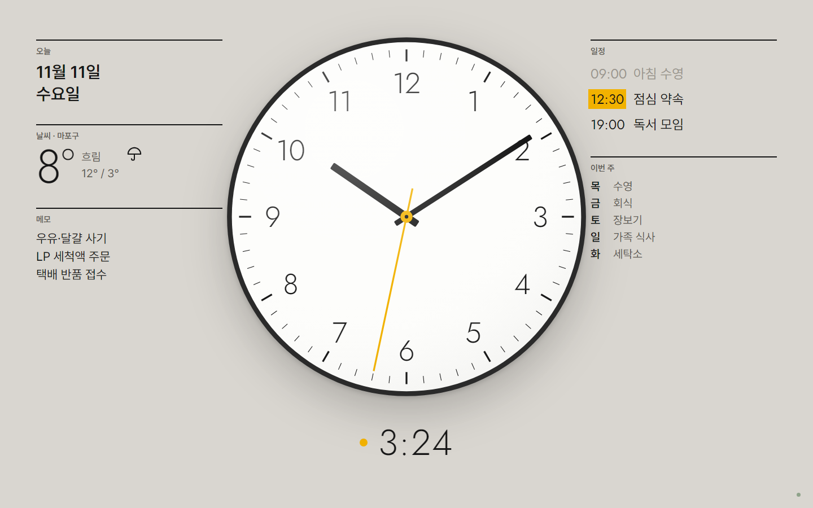
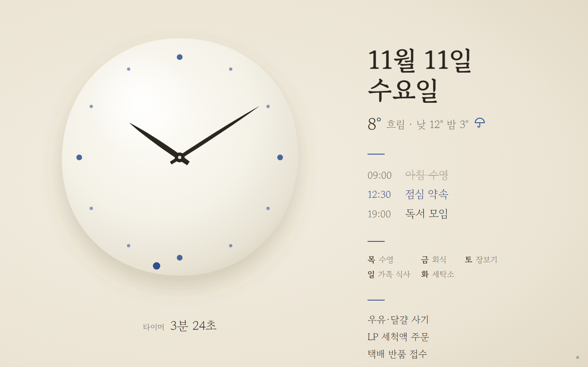
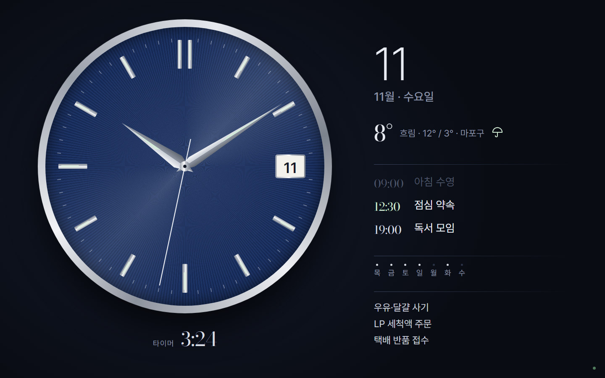
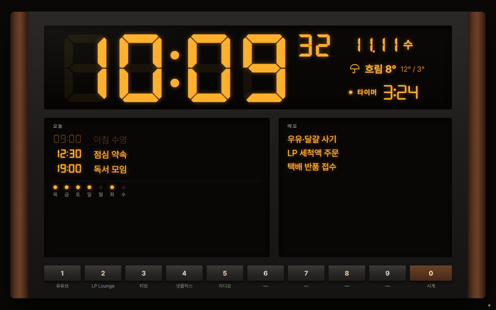
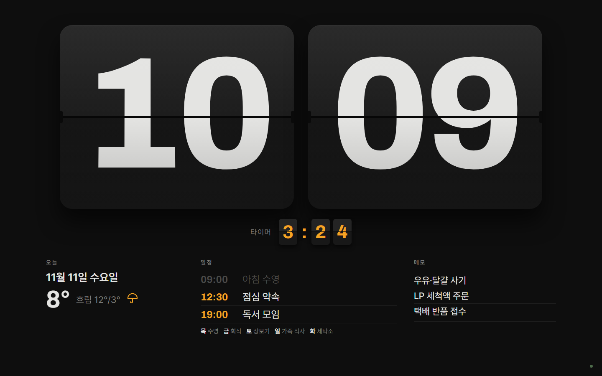
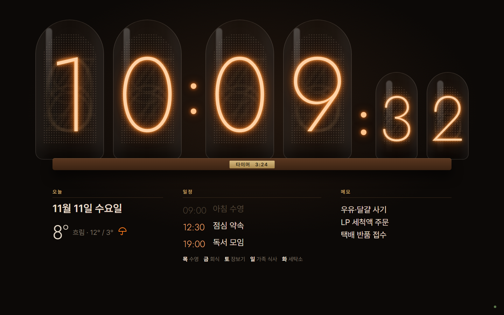
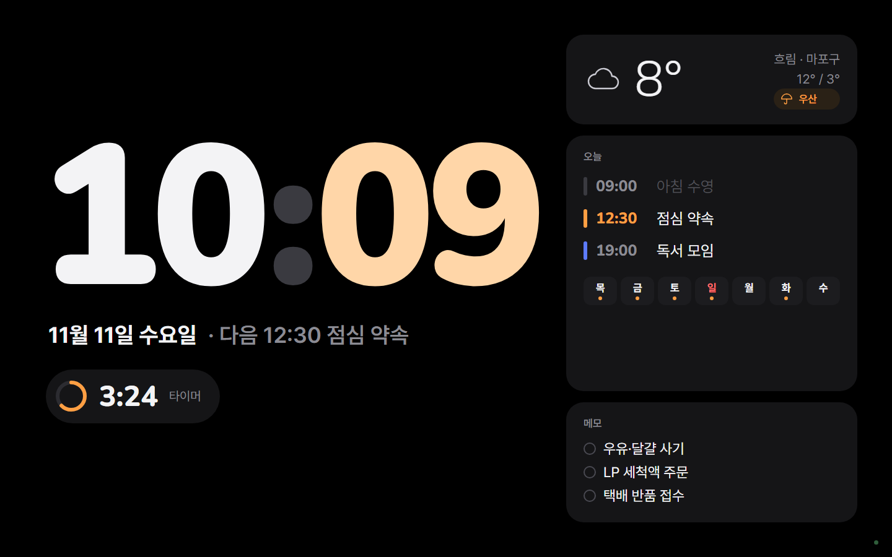

모든 값은 예시 자료입니다. 각 테마는 라이트·다크 두 벌로 만들고, 아래는 한 벌씩만 보여 드립니다. 우산 아이콘은 '비 예보'가 있는 날 모습이며, 오른쪽 아래 작은 점은 서버·네트워크 상태입니다.
1930년대 계측 시계. 동심원 띠(분 트랙·시 숫자 띠), 청색 강철 검 바늘, 6시 스몰 세컨즈. 다크판은 검은 다이얼에 야광 숫자.

흰 문자판, 얇은 숫자, 노란 초침, 볼록 유리 반사. 좌우 대칭 스위스 그리드. 다크판은 무광 검정 문자판.

달항아리처럼 살짝 기운 유약 시계판, 숫자 없이 청화 점 12개, 붓끝 모양 바늘, 초는 청화 점이 가장자리를 돕니다. 다크판은 밤의 청자빛.

선버스트 남색 문자판, 금속 인덱스·도핀 바늘, 3시 날짜 창. 라이트판은 은색 오팔린 문자판.

오디오 앞면판 + 앰버 형광 숫자, 1~9·0 프리셋 버튼 = 숫자키. 라이트판은 은색 전면판.

넘김판 시계(분이 바뀔 때 실제로 넘어감). 타이머도 작은 넘김판. 라이트판은 흰 카드.

유리관 속 주황 네온 숫자, 호두나무 받침의 황동 명판에 타이머. 라이트판은 없음에 가까워 밤 전용 성격(낮에는 받침·종이 톤 변형).

검은 바탕 큰 둥근 숫자(분은 살구색), 둥근 칸 3개, 타이머 진행 고리. 라이트판은 밝은 회색 바탕.
